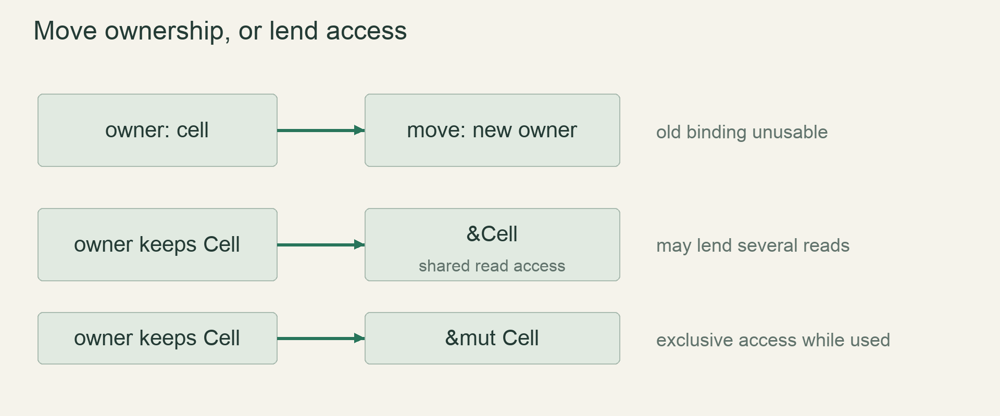

Start / First stepsLesson 12 of 100 · ~5 min reading + build time
Discover a move before borrowing
Recognize a moved-value diagnostic and distinguish a non-Copy struct from copied numeric values.
Previously: Group coordinates with a struct. Keep that working result available before starting this lesson.
Why we need this now
We want to pass a cell into a drawing helper, then use it again next frame. Passing the whole value by ownership would prevent that for our custom non-Copy type. Rather than introducing borrowing as arbitrary punctuation, we first build the precise problem it solves.
Your result: Recognize a moved-value diagnostic and distinguish a non-Copy struct from copied numeric values.

01Ask who owns the value after the call
The function consume_cell(cell: Cell) accepts a Cell by value. Calling it transfers ownership of our custom Cell into the parameter. The caller cannot then use its original binding as though that owned value remained available. This is why the final print in the example is rejected.
The compiler diagnoses the issue before running the program. Nothing partially executes and then fails at the print; compilation fails. That distinction matters when reading terminal output: a compiler error is not a runtime exception from a half-completed simulation.
02Make the failure small and intentional
Run cargo check on the worked example and look for the use-of-moved-value diagnostic, commonly E0382. Read the highlighted first move and later attempted use. The diagnostic links two source locations because the rule concerns a relationship across time, not merely one invalid token.
Do not immediately add Clone or Copy. First explain what each call is intended to do. A consumer that deliberately takes ownership may be correct. A drawing function that only needs to inspect should not consume the persistent state. That design intent is what will guide the borrowing repair in the next lesson.
03Why did integers appear to work differently?
An i32 implements Copy, so passing it by value copies the value and leaves the caller’s value usable. Our Cell has not implemented Copy; being small does not automatically grant that trait. Replacing the struct with an integer changes the type capability, not the ownership rule’s consistency.
A move is a semantic transfer of ownership; do not equate it with a guaranteed physical memory relocation. Compiler optimizations may eliminate or rearrange machine operations. At the source level, the important promise is which binding may be used after the transfer. That is the model the borrow checker verifies.
04Choose the interface from the job
Drawing needs temporary read access while main keeps ownership. Reset needs temporary write access to that same original. Neither task requires consuming the Cell. A future channel message or particle list, by contrast, may deliberately transfer ownership to another subsystem. Ownership is useful control, not simply an obstacle to bypass.
For this episode, show the failing program first, narrate the two relevant source locations, and compare a small i32 function. Stop at explaining why the API is wrong for drawing. The next lesson introduces references as the motivated repair; keeping the lessons separate prevents several unexplained changes from landing at once.
Read → predict → run → change
Walk through the working example
Deliberately broken complete example — src/main.rs; predict the move error before compiling
Download this worked example ↧
struct Cell {
row: i32,
}
fn consume_cell(cell: Cell) {
println!("inside: {}", cell.row);
}
fn main() {
let cell = Cell { row: 5 };
consume_cell(cell);
println!("outside: {}", cell.row);
}Read what each part does
- The example is deliberately invalid and should remain labelled as such.
- Cell is not Copy unless we explicitly implement the relevant capability.
- The next lesson changes the function contract rather than duplicating state.
Expected result
This example intentionally does not compile. cargo check reports that cell is used after being moved into consume_cell.Exact version numbers, paths and compiler wording may differ. Compare the behavior and file locations, not incidental output formatting.
Try the idea here
This is a bounded teaching model in your browser, not your Rust game and not a real terminal. It never executes shell commands or modifies project files.
Prediction · repair · transfer
Exercises you actually do
Write a prediction or make an attempt before opening a solution. Use the hint if stuck; then compare reasoning and verify with the stated check. A different implementation is fine when it satisfies the same contract.
Identify the two locations
Name the line that moves cell and the line that tries to use it afterwards.
Need a hint?
Read both highlighted locations in the diagnostic.
Worked solution
The call consume_cell(cell) moves the value. The later field read for the outside print attempts to use it again. The struct declaration itself is not the move.
How to verify your result
You can explain the diagnostic without changing any code.
Compare a copied integer
Write the equivalent experiment with i32.
Need a hint?
Use a function parameter typed i32.
Worked solution
fn inspect_number(row: i32) { println!("{row}"); }
fn main() {
let row = 5;
inspect_number(row);
println!("{row}");
}This compiles because i32 is Copy. It does not prove all types are copied when passed by value.
How to verify your result
Both prints show 5 and you explain the type difference.
Repair by returning ownership
As an experiment, return Cell from consume_cell and bind the returned value.
Need a hint?
The caller must receive ownership back explicitly.
Worked solution
fn round_trip(cell: Cell) -> Cell {
println!("{}", cell.row);
cell
}
// Inside main: let cell = round_trip(cell);This can work but forces ownership round-trips for a read-only task. Borrowing will express the desired access more directly.
How to verify your result
The repaired variant compiles, and you can explain why it is an awkward drawing interface.
When it goes wrong
Start with the observed symptom. Change one assumption at a time instead of pasting fixes until the error disappears.
The compiler suggests Clone and the lesson suddenly works
What is happening: Cloning changes the program’s ownership/data semantics rather than explaining the intended interface.
Try this: Undo the shortcut and identify whether the helper should consume or borrow.
You expect inside to print before compilation fails
What is happening: The package never ran because compilation failed.
Try this: Separate compiler diagnostics from runtime output.
Adding mut does not fix the move
What is happening: Mutability and ownership transfer are different questions.
Try this: Use the next lesson’s borrow when ownership should stay with the caller.
Explain it without the example
Why can passing an i32 leave the caller's value usable while this Cell does not?
Reasoning to compare
i32 implements Copy. Our Cell does not, so a by-value argument moves it. Copy is a type capability, not a rule that every small value automatically gets.
Self-check only: test a prediction or ask your tutor if anything still feels arbitrary.
For your YouTube series
Turn the lesson into an episode
Open with the problem or result
We want to pass a cell into a drawing helper, then use it again next frame. Passing the whole value by ownership would prevent that for our custom non-Copy type. Rather than introducing borrowing as arbitrary punctuation, we first build the precise problem it solves.
Teach in this order
- Ask who owns the value after the call
- Make the failure small and intentional
- Why did integers appear to work differently?
- Choose the interface from the job
Record this demonstration
Recognize a moved-value diagnostic and distinguish a non-Copy struct from copied numeric values.
Close with what the viewer can now explain
Explain the result without reading the code, make one predicted change, then show the observed result.
A lesson can span several recordings. The episode beats are a teaching outline, not a claim that every viewer learns at the same speed.
Finish with evidence
You can reproduce and explain the diagnostic. Do not derive Copy merely to avoid understanding the move.
Make one small variation without copying: predict it, run it and explain any difference. On another day, repeat one exercise from memory before starting the next lesson. Ask your tutor about any step you can execute but cannot explain.
This is an attempt marker, not a grade. Learning records are written only after demonstrated understanding.
Primary sources for this lesson
Use sources to verify the mechanism. The lesson itself supplies the instructions; the links are not a substitute for teaching them.